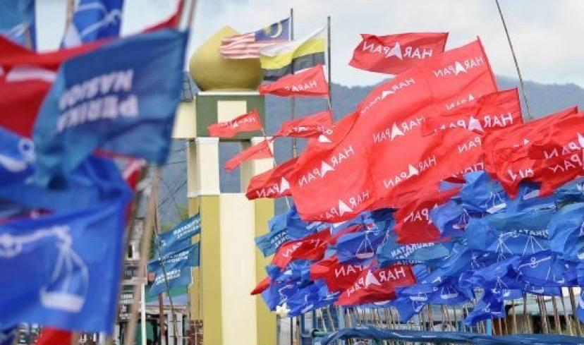
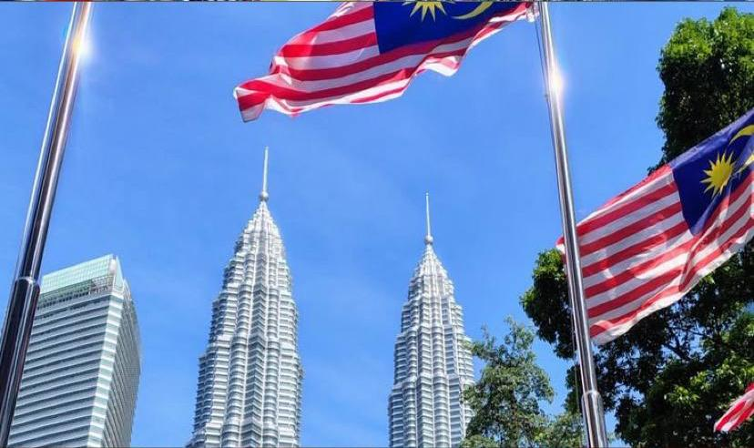
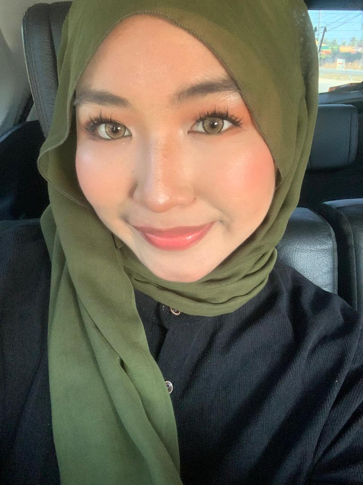
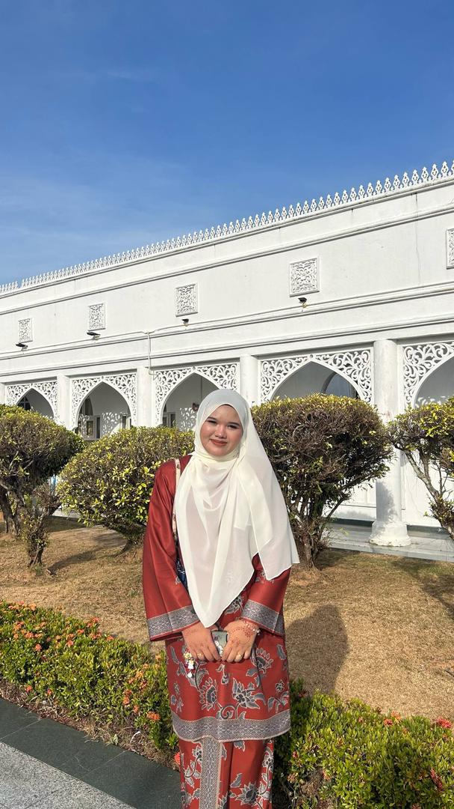
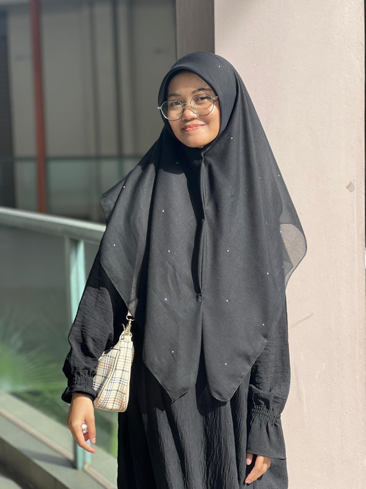
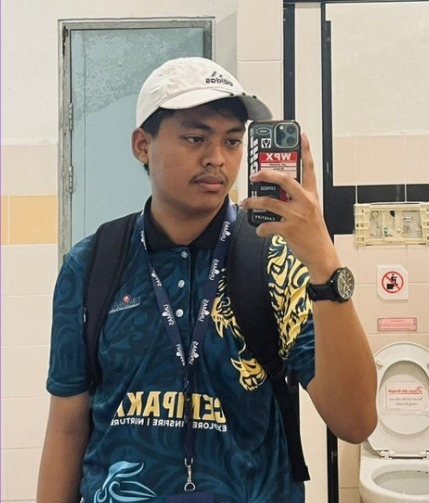
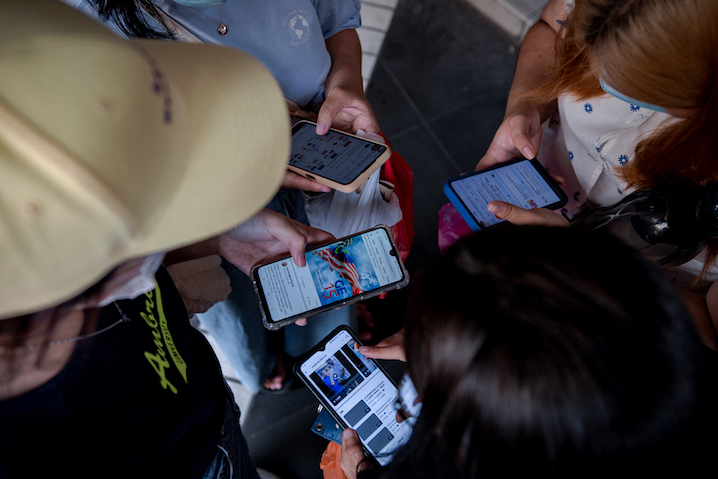

An examination of how short-form video content was weaponized to influence young voters, bypass traditional media gateways, and cultivate algorithmic echo chambers during the highly contested GE15.

Understanding the shift from grassroots physical campaigning to systematic digital warfare. We analyze the funding, deployment, and narratives pushed by political cyber forces to divide digital communities.
SSF1053: Introduction to Political Science





After the historic 2018 elections, Malaysia was suddenly thrown into political uncertainty in early 2020 following the defections of several government members of parliament (MPs). This resulted in three prime ministers leading three governments after the 14th general election. With so much political instability, the stakes for the 15th General Elections (GE15) in 2022 were high and social media inevitably became an important space for power brokers and politicians.
Social media is a popular space for Malaysians to interact with each other. Since the 2008 elections, politicians, political parties and their supporters have increasingly turned to social media to engage with netizens. It has since become an important channel to shape political discourse, with politicians and opinion leaders bypassing the mainstream and online media to post comments and statements directly on various platforms.
In the run-up to previous elections, online users employed divisive language and hate based narratives around race, religion and royalty, popularly known as 3R. The GE15 was expected to be no different. This was especially because a couple of issues had made social media an important space that shapes political discourse, including by promoting hate and toxic rhetoric. One was the political uncertainty of the past five years. This meant the stakes were high in GE15. The other was the rollout of automatic registration for voters above 18. This meant there were 1.4 million voters aged between 18 to 20, whose voting patterns were unknown but whose use of social media was well-documented.